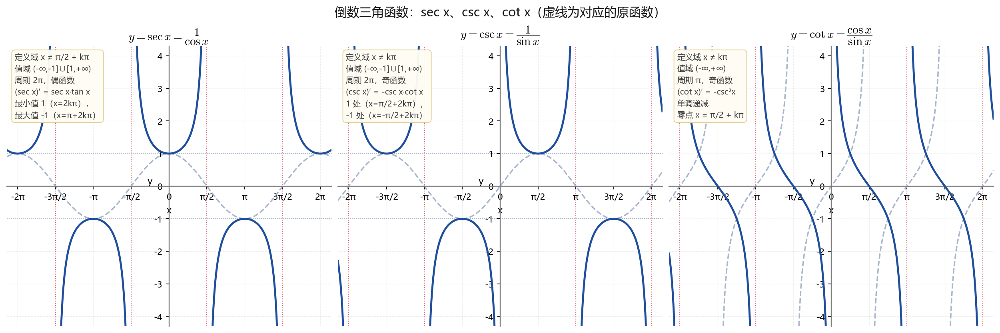
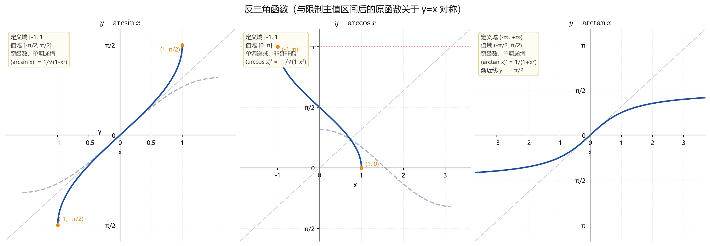
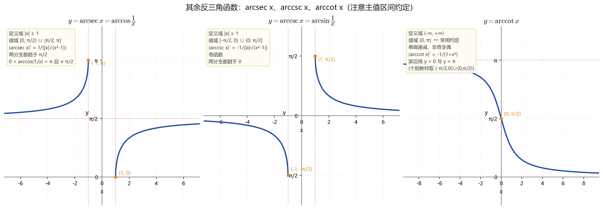
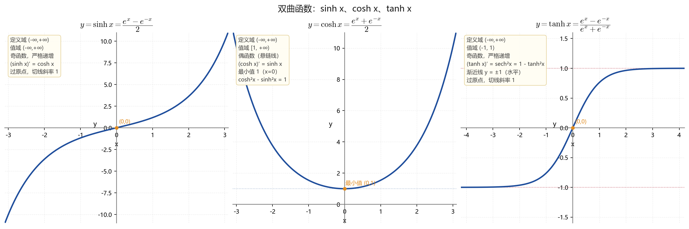
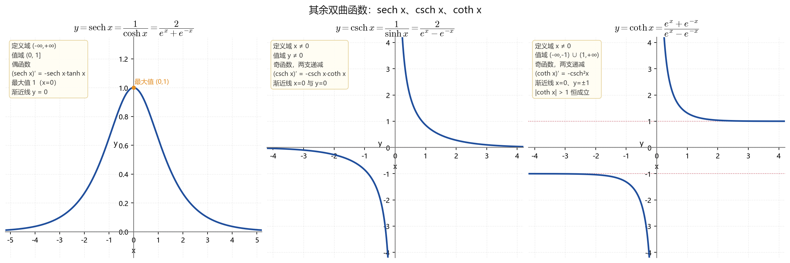
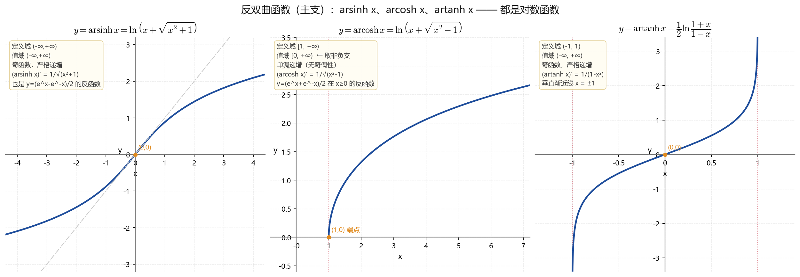
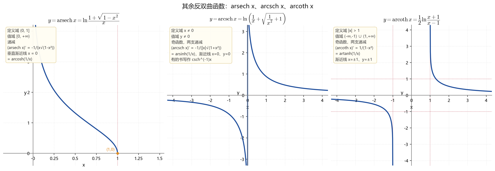
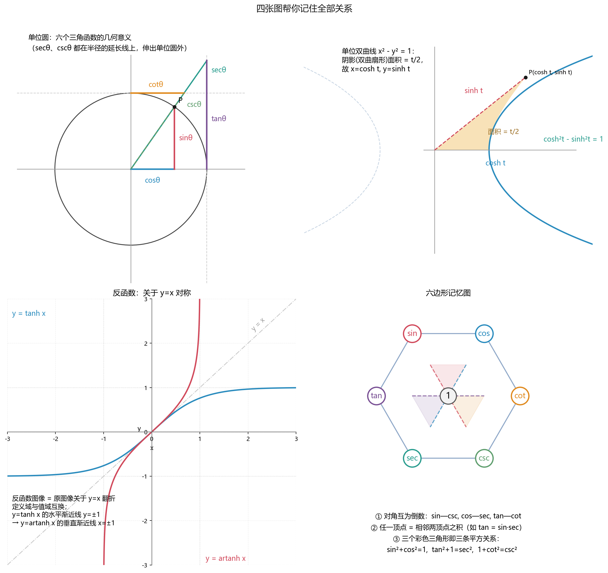

sec / csc / cot · arcsin / arccos / arctan / arcsec / arccsc / arccot · sinh / cosh / tanh / sech / csch / coth · 反双曲函数
arcsin, arccos, arctan, arccot 的定义域/值域/导数，
sinh, cosh, tanh 的定义与导数，cosh²x−sinh²x=1，
以及三个反双曲函数 arsinh, arcosh, artanh 的对数表达式。sec, csc, cot（重点是它们的导数和两个积分）。arcsec, arccsc, arsech, arcsch, arcoth。



arcsec x = arccos(1/x)，arccsc x = arcsin(1/x)，
arccot x = π/2 − arctan x。注意 arccot 的值域约定各书不同，
本书统一取 (0, π)，此时 arccot 是单调递减且处处连续的。


∫dx/√(x²+a²)、∫dx/√(x²−a²)、∫dx/(a²−x²)
本质就是这三个反双曲函数。
ar·(x) = 主支(1/x) 得到，
不需要单独背。记号上有的书写成 sinh⁻¹x、arcsinh x，含义相同。
| 函数 | 定义域 | 值域 | 奇偶 | 单调性 |
|---|---|---|---|---|
sec x | x ≠ π/2+kπ | (−∞,−1]∪[1,+∞) | 偶 | 分段单调 |
csc x | x ≠ kπ | (−∞,−1]∪[1,+∞) | 奇 | 分段单调 |
cot x | x ≠ kπ | (−∞,+∞) | 奇 | 递减，周期 π |
arcsin x | [−1,1] | [−π/2,π/2] | 奇 | 递增 |
arccos x | [−1,1] | [0,π] | 非奇非偶 | 递减 |
arctan x | (−∞,+∞) | (−π/2,π/2) | 奇 | 递增 |
arccot x | (−∞,+∞) | (0,π)（本书约定） | 非奇非偶 | 递减 |
arcsec x | |x|≥1 | [0,π/2)∪(π/2,π] | 非奇非偶 | 分段 |
arccsc x | |x|≥1 | [−π/2,0)∪(0,π/2] | 奇 | 分段 |
sinh x | (−∞,+∞) | (−∞,+∞) | 奇 | 递增 |
cosh x | (−∞,+∞) | [1,+∞) | 偶 | 先减后增 |
tanh x | (−∞,+∞) | (−1,1) | 奇 | 递增 |
sech x | (−∞,+∞) | (0,1] | 偶 | 先增后减 |
csch x | x ≠ 0 | y ≠ 0 | 奇 | 两支递减 |
coth x | x ≠ 0 | (−∞,−1)∪(1,+∞) | 奇 | 两支递减 |
arsinh x | (−∞,+∞) | (−∞,+∞) | 奇 | 递增 |
arcosh x | [1,+∞) | [0,+∞) | 无 | 递增 |
artanh x | (−1,1) | (−∞,+∞) | 奇 | 递增 |
arsech x | (0,1] | [0,+∞) | 无 | 递减 |
arcsch x | x ≠ 0 | y ≠ 0 | 奇 | 两支递减 |
arcoth x | |x|>1 | (−∞,−1)∪(1,+∞) | 奇 | 两支递减 |
| 函数 | 导数 | 函数 | 导数 |
|---|---|---|---|
sin x | cos x | arcsin x | 1/√(1−x²) |
cos x | −sin x | arccos x | −1/√(1−x²) |
tan x | sec²x | arctan x | 1/(1+x²) |
cot x | −csc²x | arccot x | −1/(1+x²) |
sec x | sec x·tan x | arcsec x | 1/(|x|√(x²−1)) |
csc x | −csc x·cot x | arccsc x | −1/(|x|√(x²−1)) |
sinh x | cosh x | arsinh x | 1/√(x²+1) |
cosh x | sinh x | arcosh x | 1/√(x²−1) |
tanh x | sech²x | artanh x | 1/(1−x²) |
sech x | −sech x·tanh x | arcoth x | 1/(1−x²) |
csch x | −csch x·coth x | arsech x | −1/(x√(1−x²)) |
coth x | −csch²x | arcsch x | −1/(|x|√(1+x²)) |
| 函数 | 对数表达式 |
|---|---|
arsinh x | ln(x+√(x²+1))，x∈ℝ |
arcosh x | ln(x+√(x²−1))，x≥1 |
artanh x | ½ln((1+x)/(1−x))，|x|<1 |
arcoth x | ½ln((x+1)/(x−1))，|x|>1 |
arsech x | ln((1+√(1−x²))/x)，0<x≤1 |
arcsch x | ln(1/x+√(1/x²+1))，x≠0 |
| 恒等式 | 内容 |
|---|---|
| 倒数关系 | sec x=1/cos x，csc x=1/sin x，cot x=1/tan x |
| 平方关系 | sin²+cos²=1，tan²+1=sec²，1+cot²=csc² |
| 反三角互补 | arcsin x+arccos x=π/2，arctan x+arccot x=π/2 |
| 双曲平方关系 | cosh²x−sinh²x=1，1−tanh²x=sech²x，coth²x−1=csch²x |
| 双曲倍角 | sinh2x=2sinh x cosh x，cosh2x=cosh²x+sinh²x=2cosh²x−1 |
| 场合 | 用到的函数 | 要掌握到什么程度 |
|---|---|---|
| 基本积分表 | ∫dx/√(a²−x²)=arcsin(x/a)+C ∫dx/(a²+x²)=(1/a)arctan(x/a)+C ∫dx/√(x²±a²)=ln|x+√(x²±a²)|+C |
必须闭卷写出，且知道后者就是 arsinh / arcosh |
| 三角有理式积分 | ∫sec x dx=ln|sec x+tan x|+C ∫csc x dx=ln|csc x−cot x|+C ∫cot x dx=ln|sin x|+C |
sec/csc/cot 主要就活在这三个公式里 |
| 三角代换 | x=a sin t、x=a tan t、x=a sec t | 会画直角三角形回代，注意 t 的取值范围与 arcsec 的符号讨论 |
| 泰勒/麦克劳林展开 | arctan x、arcsin x、sinh x、cosh x、arsinh x | arctan/arcsin 的展开要会（求 π 的级数、极限题常用），sinh/cosh 的展开记住即可 |
| 微分方程与工程数学 | cosh、sinh、tanh | 知道定义和导数，会解 y″−a²y=0 时用它们写通解 |
| 复变函数（后续课程） | 全部六个双曲函数及其反函数 | 此时才需要系统的公式，高数阶段不必准备 |
arcsec/arccsc、arccot 值域约定以及双曲函数的考查深度并不一致。
上面按国内主流教材的通常要求给出，具体以你所用教材与教学大纲为准。
本页所有图像由 make_math_graphs.py 用 matplotlib 生成；
所有公式断言由 verify_math.py 数值校验（41 项全部通过）。